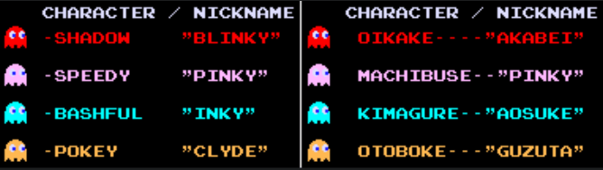
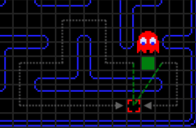
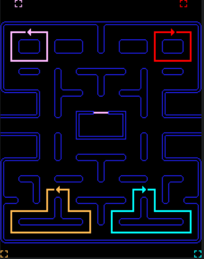
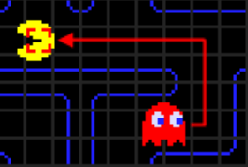
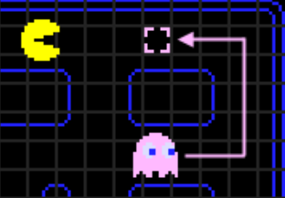
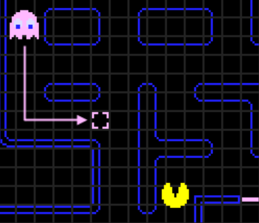
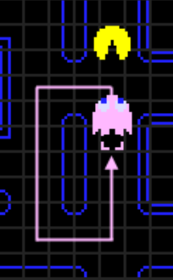
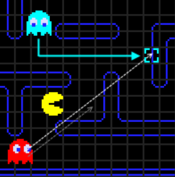
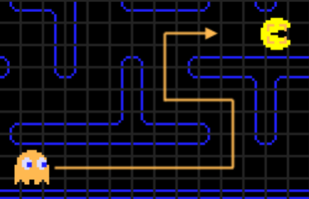

The Artificial Intenlligence controlling each Ghost in the famous arcade game "Pacman" is highly advanced for its time. Each ghost has a unique path-finding algorithm and various search modes that gives each ghost personality.
Miscellaneous:
Speed of both pac-man and the ghosts increase, and the ghosts behavior gets progressively harder over the course of the first 21 levels. Level 21-255 are identical.
Level 256 is the last level which is unbeatable due to half the map being glitched.
The duration of “Frightened” mode is decreased as the player progresses, and is limited to a fraction of a second at level 21.
Ghosts behavior:
Slow down to ¼ speed in the two tunnels.
Each ghost is programmed with an individual “personality” (a different algorithm it uses to determine its method of moving through the maze).
The majority of the time, each ghost has a specific tile it wants to reach, aka “target tile”
All ghosts will travel to their individual “target tile” the same way (the pathfinding is identical).
Depending on the ghost’s personality (color), it will choose a different type of “target tile”.
The image displays the different names and behaviors of the ghosts (left is English, right is Japanese).

Ghost Movement Modes:
Ghosts are always in one of three modes: “Chase”, “Scatter”, “Frightened”.
“Chase” = this is the normal mode and the mode that the ghosts will spend most of their time in
“Scatter” = depending on the color of the ghost, the ghost will target one of the four corners and flee to it
“Frightened” = this mode is unique because the ghosts do not have a specific target tile, instead they pseudo-randomly choose which turns to make at every intersection they come across. This is also the only mode where they change to a uniform color (blue) and moves at ⅓-¼ speed
Throughout the game, a set timer is run to create “waves” of ghosts to attack pac-man. This timer switches between “Chase” and “Scatter” progressively faster throughout the game
Timer is paused when ghosts are in “Frightened” mode
Timer settings:
Scatter for 7 sec, Chase for 20 sec
Scatter for 7 sec, Chase for 20 sec
Scatter for 5 sec, Chase for 20 sec
Scatter for 5 sec, Chase permanently
First to scatters are decreased to 5 sec after level 5
Basic Ghost Movement Rules:
Ghost AI is simple and short-sighted (they only plan one “target tile” ahead).
A ghost cannot go backwards. The only exception to this rule is when they change from “chase” mode to “scatter” mode, because whatever “target tile” they had planned is forgotten.
Ghosts always go out of the “ghost house” to the left.
When choosing a “target tile” the ghost measures two lines. Each line starts at the first tile of the possible path, and then a straight line to the target tile is measured to determine which path is shortest. This is where sometimes the ghost unknowing takes the longer path because the straight line to the path was shorter.

Individual Ghost Personalities:
Each color ghost has a target tile which is located out of the playable zone.
Each ghost path finds their way to the closest possible tile, but since they cannot stop or go backward, they pass it and turn around as soon as possible.
This results in a continuous loop in each corner.
The image shows where the target tile is and the loop for the respected ghost.

The Red Ghost (Blinky) :
This ghost begins outside the “ghost house” and is the first threat to the player.
The game refers to his personality as “shadow” but in Japanese it is 追いかけ (oikake) and literaly translates to “chaser”.
His target in chase mode is pac-man's location. Here is an image that displays Blinky’s pathfinding.
When pac-man eats 100 dots and again when he eats 200 dots, Blinky’s speed is increased by 5%. At this time, Blinky’s scatter mode is overwritten he target’s pac-man’s location. This occurs for the next 50 dots eaten or when the game ends.

The Pink Ghost (Pinky):
This ghost starts in the “ghost house” but exits in less than 5 seconds.
His nickname is “Pinky” and his personality is “speedy”, and in Japanese his personality is 待ち伏せ (machibuse) which literally translates to “ambusher”.
His targeting system is 4 tiles ahead of pac-man instead of pac-man’s current position. The image depicts his targeting system.

In the original version, this would work in every direction that Pac-man was facing except “up”. Facing “up” would cause an overflow error in the games code, causing Pinky to target 4 tiles up and 4 tiles to the left of Pac-man’s position. (However this can be fixed with some tweaking of the code). The image depicts the bug.

This targeting system allows Pac-man to win at the game of “chicken” against Pinky by not going forward into the “target tile”. Once Pinky is one tile past the “target tile”, he has not reached Pac-man but has past the “target tile”, so is told to find a new path back to the tile, resulting in him turning around. past the The image depicts how that would work.

The Blue Ghost (Inky):
This ghost remains in the “ghost house” until Pac-Man has eaten 30 dots.
His nickname is “Inky” and his personality is “bashful”, and in Japanese his personality is 気紛れ (kimagure) literally translated as “whimsical”.
Inky uses both Pac-man’s position and Blinky’s position in his calculation when choosing a “target tile”. First, two tiles in front of Pac-man’s current location is recorded. Second, a vector is drawn from Blinky’s current position to the recorded tile. Then, The length of the vector is doubled and the new tile is recorded as the “target tile”.
This targeting system has an interesting result. If Blinky is not near Pac-man Blinky will not be either. If Blinky is closely chasing Pac-man, Blinky will be as well.
The overflow bug in the code still applies when pac-man goes “up”, but has the same outcome of two tiles up and two tiles left.

The Orange Ghost (Clyde):
This ghost is the last to leave the ghost house, and does not exit until ⅓ of the dots have been eaten.
His nickname is “Clyde” and his personality is “pokey”, and in Japanese his personality is お惚け (otoboke) literally translated as “feigning ignorance”.
In “chase” mode, he has two unique modes which constantly switch back- and-forth, based on the proximity of pac-man, giving the impression that Clyde is just “doing his own thing”.
If pac-man is further than 8 tiles away, his “target tile” is pacman’s current location. If pac-man is closer than 8 tiles away, his “target tile” is the same as his “target tile” in “scatter” mode, which is the bottom-left corner of the maze. The image depicts Clyde’s targeting system.

This targeting system gives the overall effect that he wants to chase pac-man, but when he gets to close he runs away.
Knowing this, the player can indefinitely avoid Clyde by simply not sitting in the bottom-left corner or by not blocking his escape route.